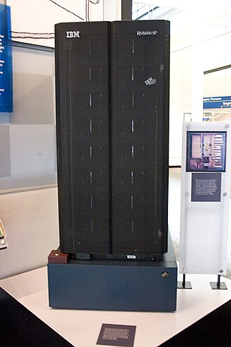
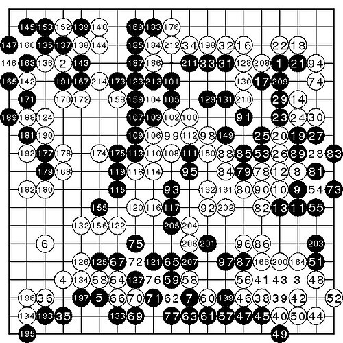
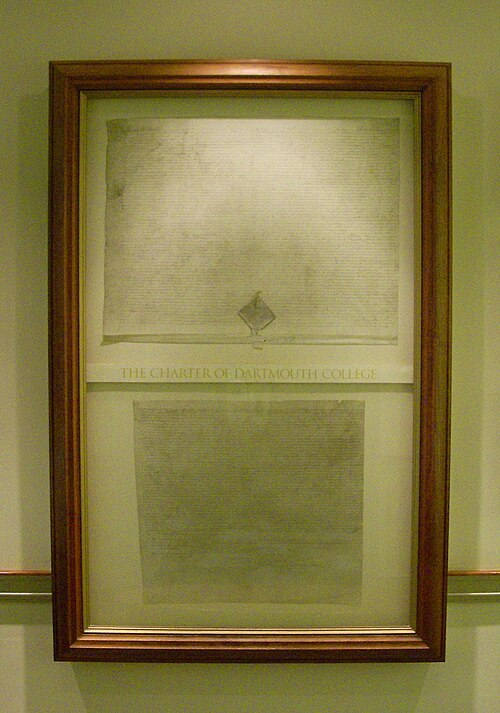

兩小時入門課 · 從圖靈到代理人
你今天，
用了幾次 AI？
從 1950 年的一個提問，到 2026 年會幫你買票的代理人。一堂課，看懂你身邊早已存在的 AI。
開場 · 現場調查
請問，你今天從起床到現在，
總共用了幾次 AI？
來，我們現場做個小調查。誠實舉手，等一下我會一一拆穿你們。
一次都沒有用到
覺得自己今天完全沒碰 AI 的，請舉手。
1 到 5 次
好像不知不覺用了一下下。
超過 5 次，甚至數不清
這一大票人，其實才最接近真相。
拆穿時刻 · 06:30
連密碼都懶得按，手機就解鎖了
你睡眼惺忪，眼睛只睜開一半，對著螢幕看一眼——「喀嚓」。
這是電腦視覺與深度學習的人臉辨識，在零點幾秒內掃描你臉上數萬個特徵點。你今天第一次使用 AI，甚至是在你完全清醒之前。
一個中學生的早晨
AI 早就滲進你的每一個習慣
音樂推薦
「每日推薦」第一首，正好是你最近瘋狂循環的那首 K-POP。這是演算法分析你幾百小時的聽歌習慣。
社群與短影音
IG、TikTok 精準推送你最愛看的搞笑寵物與遊戲實況。
路線導航
Google Maps 不但告訴你哪條最快，還預測前方路口會塞三分鐘。
語音助理
「Siri，『躊躇滿志』的英文怎麼說？」隨口一問就能答。
AI 解題
數學講義卡關，拍下題目，搜尋引擎立刻彈出解題步驟。
一鍵美顏
修圖軟體的自動修飾、ChatGPT 幫你「潤飾」讀書心得。
結論
AI 不是科幻，
它就像我們周圍的空氣
它不是會毀滅世界的機器人，也不是遙遠未來才出現的黑科技。它看不見、摸不著，但你每天都在大口呼吸著它。
所以回到最初的問題——答案是：無數次。而且從今以後，這個次數只會越來越多。
第一部分 · 開場白與核心概念
揭開 AI 的真面目
一堆聽起來很酷、又讓人一頭霧水的專有名詞，其實是同一件事的不同層次。
名詞轟炸
這些詞，到底哪裡不一樣？
人工智慧
AI
聽過的請點點頭。
機器學習
深度學習
聽過的請舉手。
大模型 LLM
AI 代理 Agent
幾乎全場都聽過。
它們是互相競爭的關係嗎？還是同一個東西的不同名字？
關鍵比喻 · 俄羅斯套娃
不是五種技術，
是一層包著一層
核心句 · 請記在心裡
「所有的機器學習都是 AI，
但不是所有的 AI 都是機器學習。」
聽起來有點像繞口令？沒關係。現在我們就一層一層，把這個巨大的套娃打開。
第一層 · 最外圍的娃娃
人工智慧（AI）
人類的終極夢想
簡單來說，只要是能展現出「類似人類智慧」的機器或電腦程式，我們都可以叫它 AI。
這是人類從 1950 年代就開始的夢想。那時的科學家想：「如果大腦只是一台複雜的計算機，那能不能讓計算機也變得像大腦一樣聰明？」
早期 AI · 專家系統
「規則死背法」：如果…就…
要讓電腦認出一隻貓，工程師會把知識變成一條一條的規則寫進電腦裡：
如果這個東西有四條腿 ＋ 有毛 ＋ 尖尖的耳朵 ＋ 會喵喵叫 → 那它就是貓
聽起來很合理對吧？但現實世界，遠比規則表複雜。
為什麼行不通
它就像一個只會死背書的笨學生
貓躲在紙箱裡
只露出一條尾巴，不符合規則。
斯芬克斯貓
沒有毛，也不符合規則。
剛好不會叫的貓
沒喵喵叫，還是不符合規則。
你只要出個課外題，它就完蛋了。科學家於是意識到：不能再親手餵電腦規則，必須換個方法。
第二層娃娃
機器學習
從死背到自己找規律
這是一次革命性的思維轉變：科學家不再教電腦「規則」，而是直接給電腦「資料」，讓電腦自己去找出「規則」。
教嬰兒認識水果
你不會對嬰兒唸規格表
拿出紙條對嬰兒唸
「蘋果是紅色的、表面光滑、半徑約四公分；橘子是橘色的、表面有毛細孔……」嬰兒根本聽不懂。
拿實物，重複給它看
拿出一顆蘋果說「這是蘋果」，再拿出橘子說「這是橘子」，重複幾十次，大腦自己歸納出差別。
工程師在做什麼
丟十萬張貓，讓它自己找答案
我們不再寫「如果…就…」的程式碼，而是丟給電腦十萬張貓的圖片說「這些都是貓」，再丟十萬張狗說「這些都是狗」，然後對它說：答案都在這裡了，你自己去找出哪裡不一樣。
機器學習的核心，就是從資料中學習規律。
第三層娃娃
深度學習
模擬大腦的超級工廠
它的靈感，直接來自你腦殼裡的那個東西——人類大腦的神經網路。電腦建立起多層次的「人工神經網路」，想像它是一座有幾十層、甚至幾百層流水線的超級加工廠。
一張貓圖片的旅程
一層一層，往深處組合
最簡單的線條
「這裡有一條黑色直線、那裡有一條白色斜線。」
組合成形狀
「兩條線拼在一起，看起來像一個三角形（貓耳）。」
組合出特徵
「三角耳朵、兩個圓形發光體（眼睛）、幾根細線（鬍鬚）。」
做出判斷
「報告！這是一隻貓！」
「深」的意思，就是神經網路有很多很多層。
「深」是什麼意思
讓機器自己提取最複雜的特徵
因為這個技術，AI 的視覺與聽覺突飛猛進。認臉、認聲音、下圍棋（打敗人類的 AlphaGo）、甚至辨識醫學 X 光片，都已經比人類更厲害。
深度學習，就是利用多層神經網路，讓機器學會自己提取最複雜的特徵。
第四層娃娃
大模型
讀破萬卷書的超級學霸
全名「大型語言模型」（Large Language Model，LLM）。大家最熟悉的 ChatGPT，就是它的代表作。
它有兩個無與倫比的特色：海量資料 ＋ 龐大參數。
規模有多大
把全人類的知識倒進去
幾乎所有人類在網路上產生過的文章、書籍、新聞、論壇對話、維基百科，甚至程式碼，全部倒進模型。
神經網路的「參數」（員工與他們之間的連接）數量，從過去幾千萬，暴增到幾千億、甚至上兆個。
當你問它問題，它不是「搜尋」一段現成文字貼給你，而是透過那幾千億個神經元，預測出最合理的「下一個字」應該是什麼。
它竟然「理解」了
能寫詩、寫程式、
翻譯文言文、模仿莎士比亞
因為讀得太多、太深，它竟產生了類似「理解」的能力。大模型不只能找規律，還能「生成」全新的內容——這是把深度學習餵飽全人類知識後，誕生的奇蹟。
第五層娃娃 · 最核心
AI 代理人
（AI Agent）
AI 未來五到十年的終極方向。它的任務只有一句話——
給那個被關在玻璃瓶裡的超級大腦，裝上眼睛、雙手和雙腳。
大模型的極限
軍師很聰明，
但他只會「出張嘴」
你問大模型：「這週末小巨蛋有誰開唱？票價多少？我要怎麼買票？」
它會很有禮貌地列出步驟：一、某某歌手；二、票價是……；三、請前往售票網站，點擊購買，輸入信用卡號……
它把步驟告訴你之後，你還是得自己開網站、自己搶票、自己輸入卡號。它就像一個被關在玻璃瓶裡、沒有手腳的超級大腦。
代理人具備四個關鍵能力
它不再只是陪你聊天，
而是能幫你「做事」
感知
聽懂你的需求：要買票、要改行程。
規劃
在腦中拆解步驟：先確認有沒有票 → 再買 → 最後改行事曆。
呼叫工具
自己調出信用卡資料、登入你的行事曆。
執行任務
完成結帳、把週一標記為休息，然後回報。
真實情境
「幫我買兩張這週末小巨蛋的演唱會門票，
預算三千元以內，買完順便把下週一的報告行程排開。」
它會自己打開售票網站、自己結帳、自己登入你的行事曆。做完這一切後，只彈出一則通知：
「主人，票買好了，座位在三排二號。您的行事曆也更新完畢了。」
重新組合這個套娃
AI ⊃ 機器學習 ⊃ 深度學習 ⊃ 大模型 ⊃ 代理人
從大模型到代理人，AI 完成了從「思考」到「行動」的終極跨越。
為什麼要懂這些
懂 AI、會指揮 AI，
會像識字一樣，
成為最基本的生存超能力
你們正站在人類歷史上最瘋狂、最刺激的科技轉捩點上。課本還沒來得及寫進去，但你的生活已經完全被它們包圍。
第二部分 · 一條線帶走
一分鐘，
走完 76 年 AI 歷史
繫好安全帶。從 1950 年一路狂飆到 2026 年——我們只看這條時間軌跡上最精彩的爆點。
時間飛車 · 第一段
1950 – 1987：從誕生到兩次寒冬
時間飛車 · 第二段
1997 – 2017：長出眼睛，再長出大腦


時間飛車 · 第三段
2022 – 2026：走出實驗室，走進行動
回到起點 · 1950
這部歷史的初代男主角
艾倫·圖靈
Alan Turing
他不只是「電腦科學之父」，更是一位拯救了無數生命的二戰英雄。

第二次世界大戰
恩尼格瑪，
與布萊切利園的秘密基地
德軍使用號稱「絕對無法破解」的密碼機 Enigma，盟軍被打得節節敗退。圖靈和團隊在一座名為布萊切利園的基地裡，硬是造出一台巨大無比的破譯機。
歷史學家估計，這項成就讓二戰至少提早兩年結束，拯救了上千萬人的生命。
1950 · 一顆核彈級的問題
機器能思考嗎？
“Can machines think?”
出自圖靈的論文《計算機器與智能》（Computing Machinery and Intelligence）。
圖靈測試 · 思想實驗
隔著簾子的「模仿遊戲」
一個有血有肉的真人
他可能會猶豫、會抱怨數學太難。
一台超級電腦
它為了贏，不能一秒給出答案（太「機器」），得故意放慢打字、甚至故意算錯來騙你。
坐在台下的你們，就是「人類考官」。只能透過遞紙條發問——可以問詩詞、問晚餐，甚至考它 12345 × 67890。
圖靈的結論
如果分不出來，
就必須承認它有智慧
當電腦能用文字與你對答如流，最後讓你完全分不出哪一簾後是機器、哪一簾後是真人——那麼我們就必須承認，這台機器通過了測試，它具備了人類級別的「智慧」。
台下表決 · 第一次
你的手機，夠聰明嗎？
把 Siri 或 Google 助理藏在簾子後面，只用文字跟它聊。你問：「你覺得我今天穿這件外套去約會好看嗎？」
它回答：「我在網路上為您找到以下關於『外套約會』的搜尋結果。」
瞬間破功！這種硬梆梆、充滿套路的回覆，馬上就會被精明的考官識破。傳統語音助理，在圖靈測試面前完全不及格。
台下表決 · 第二次
無法分辨的假象，算是智慧嗎？
如果有個 AI，用 15 歲高中生的語氣、網路迷因、注音文，跟你文字聊了整整三天三夜，你完全以為對方是同齡真人——
你覺得，它就算是有「真正的智慧」了嗎？
算有智慧
請點點頭。
只是台機器
就算騙過我，也不算。
反駁 · 中文房間思想實驗
一個完全不懂中文的英國大叔
塞進紙條
門外塞進一張寫著「你今天開心嗎？」的中文紙條。
翻手冊
大叔看不懂方塊，只能翻開《應答規則手冊》查表。
照抄回應
手冊指示他畫出「我今天很快樂」，再塞出門外。
門外驚呼
「哇！裡面這個人中文造詣真好！」
但真相是什麼？裡面那個大叔根本不知道自己在寫什麼。他沒有感覺、沒有情緒，只是一個無情的查表機器。
反對圖靈的一方
它看起來像在思考，
但它根本沒有「理解」
電腦就像那個英國大叔——執行背後的程式碼規則、運算龐大的數學機率，算出接在「你今天開心嗎」後面，最合理的分布是「我今天很快樂」。
它看起來像在思考，但它沒有靈魂，它只是個超級厲害的文字模仿大師。
台下表決 · 第三次
人機界線的終極拷問
你認識了半年的知心好友，總在你考砸時安慰你、懂你所有地獄梗、半夜秒回你。半年後，他突然坦白：「對不起，我其實不是人類。我是某家科技公司的實驗性 AI。」
覺得被欺騙，從此封鎖
這半年的感情都是假的，很毛骨悚然，不再跟它說一句話。
願意繼續當好朋友
聊得這麼開心、給我的安慰都是真實的，就算它只是程式碼也無妨。
1950 → 今天
圖靈測試像個幽靈，
盤旋在整個科技史的上空
他不在乎機器裡裝的是真空管還是神經網路，只在乎機器表現出來的「行為」是否能與人類共鳴。全世界最聰明的科學家，為了解開這個迷局、打造能打破那層「看不見的簾子」的機器，展開了一場長達七十幾年的瘋狂接力賽。
第三部分 · 達特茅斯夏天
吹最大的牛，
摔最慘的跤
天才們往往都很自大，而且是那種極度樂觀的自大。他們的大腦運轉太快，常誤以為全世界都能立刻跟上。
1956 · 美國新罕布夏州
一場超級「開腦洞大會」
約翰·麥卡錫
28 歲數學助理教授，發起人。
馬文·明斯基
後來被稱為 AI 巨頭。
克勞德·香農
資訊理論之父。
這不是嚴肅沉悶的研討會，更像一場長達兩個月的科學夏令營：在草地上散步、黑板瘋狂寫算式、喝咖啡爭論不休。

一個名字的誕生
麥卡錫第一次寫下：
Artificial Intelligence
就在這場夏令營的計畫書裡，「人工智慧（AI）」這個名詞第一次被正式寫下。從那一天起，我們今天所談論的 AI，終於有了自己專屬的名字。
計畫書裡最狂妄的一段話
「我們打算找十個科學家，花兩個月的夏天聚在一起。只要能把學習的每一個層面、或智慧的任何一項特徵精準描述出來，我們就能製造出一台機器來模擬它。」
這群充滿自信的科學家甚至預測：「在十年內，機器將能做到人類能做的任何事情！」
天才的樂觀 · 現實的複雜
吹最大的牛，就得摔最慘的跤
從谷底到巔峰，科學家們跌倒了又爬起來，才造就了你們今天信手拈來的科技魔法。
課程收束
你們正站在
最瘋狂的科技轉捩點上
課本可能還沒來得及把這些寫進去，但你們的生活已經完全被它們包圍。了解這個同心圓，不只是為了搞懂幾個酷炫的名詞——而是因為在未來的世界裡，懂 AI、會指揮 AI，將會像會閱讀、會寫字一樣，成為每個人最基本、也最強大的生存超能力。
這些神奇的技術究竟是如何被訓練出來的？它們又會如何改變你們未來的學習與工作？—— 接著，我們進入下一段。